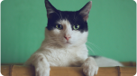
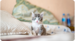

Artigos relacionados

Descubra atividades
Sábado preguiçoso
Descubra atividades
interessantes para fazer com seu
pet durante os finais de semana.

Balaio de gatos
Como evitar confusões entre
seus gatíneos e acostumá-los
desde filhotes.
Cartela de cores
Seu gato é inverno intenso?
Verão profundo? Descubra as
cores que mais combinam com
seu bichano.

Os gatos sentem frio?
Preparem-se para a frente fria
que vem para o país da melhor
maneira possível.

Moacir é o gatinho da semana do